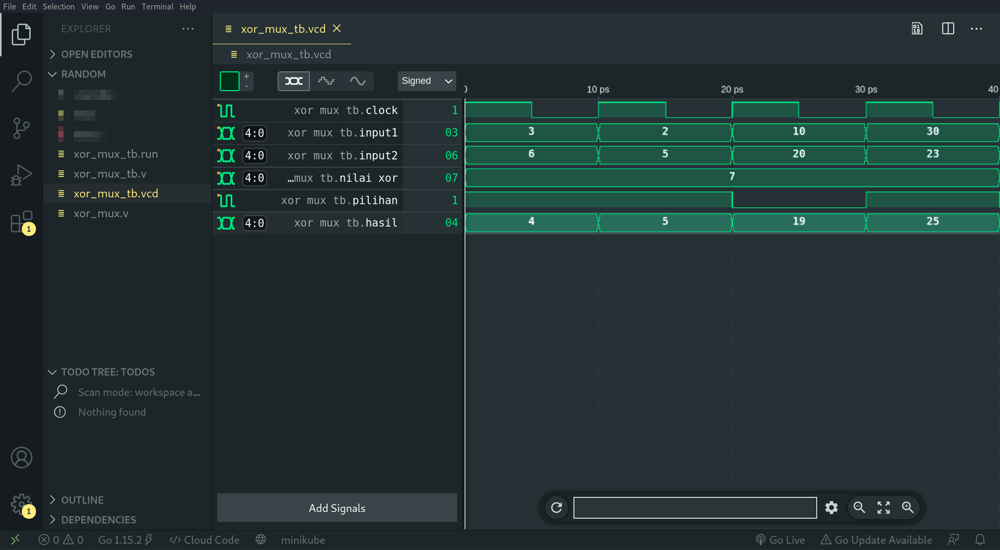
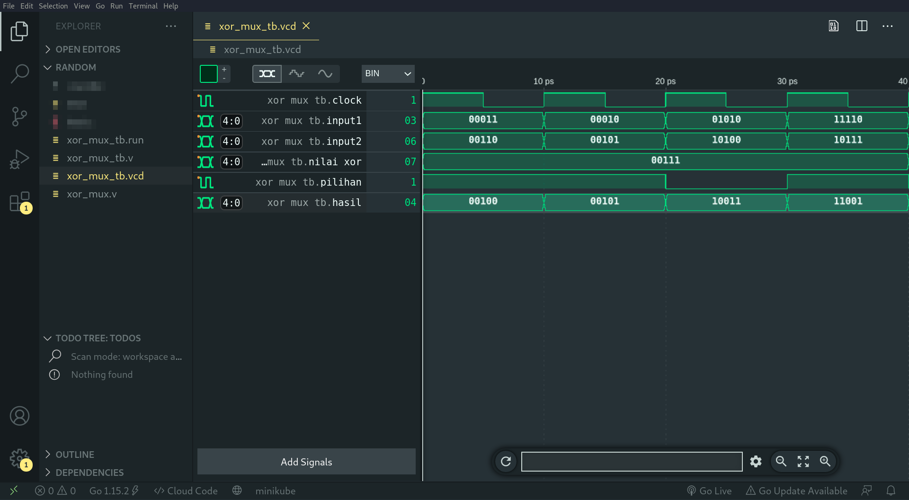

FPGA Series: (0x3) Workflow
Pada kali ini saya akan memberi penjelasan mengenai tahapan-tahapan yang bisa dilakukan untuk membuat, mengcompile, dan menjalankan programnya.
The series
Series nya ini saya bentuk secara berurut menggunakan penomoran dalam bentuk hexadecimal (bagi yang belum tau) maka dari itu pada series ketiga ini atau series 0x3 saya membahas langkah-langkah untuk membuat, mengcompile, dan menjalankan program yang dibuat.
[Alur kerja] -> berikut tertera ToC (Table of Content) dari artikel ini :
| Pembahasan |
|---|
| Verilog |
| Iverilog |
| Bonus Resource |
| What's next ? |
Verilog
Sebelum memasuki tahapan untuk pembuatan programnya, saya akan membahas terlebih dahulu kerangka dari program yang akan dibuat (dalam konteks ini) dengan menggunakan Verilog (sebagai bahasanya).
Verilog itu sendiri merupakan sebuah bahasa yang sering digunakan dalam pembuatan program pada FPGA.
Struktur umum untuk sebuah modul pada verilog bisa dibuat seperti berikut :
module nama_modul #(
/*******************************************************/
/* Disini kita bisa memasukkan deklarasi parameter */
/* yang bisa digunakan pada modul ini, terutama akan */
/* berguna pada pendeklarasian port dan/atau sinyal */
/* yang lebar data nya dinamis */
/*******************************************************/
parameter N=0
) (
/*******************************************************/
/* Disini kita bisa memasukkan deklarasi port / sinyal */
/* yang akan digunakan sebagai input dan/atau output */
/* dari modul yang dibuat ini */
/*******************************************************/
output x,
input y
);
/*******************************************************/
/* Disini kita bisa memasukkan deklarasi variable */
/* serta program yang akan dijalankan untuk modul nya */
/*******************************************************/
assign x = y ^ y;
endmodule
Untuk penjelasan lengkap mengenai apa itu modul dan hal-hal yang lebih mendetail mengenai Verilog (karena saya tidak akan membahas nya disini), silahkan kunjungi beberapa tautan berikut :
- https://www.chipverify.com/verilog
- http://www.asic-world.com/verilog
- https://github.com/fakhrip/LearningJourney_v1 [Work in Progress]
Iverilog
Tools ini yang akan menjadi tools utama dalam pembuatan program untuk FPGA nya.
-> Module
Pada artikel ini kita akan menggunakan program verilog berikut ini :
/*******************************************************/
/* Nama file: `xor_mux.v` */
/* Fungsi: Mengoutputkan sebuah value yang berasal */
/* dari pemilihan salah satu input, yang */
/* nantinya akan di xor kan dengan input */
/* yang lainnya */
/*******************************************************/
module xor_mux #(
parameter N=2
) (
input [N-1:0] a,
input [N-1:0] b,
input [N-1:0] c,
input sel,
output [N-1:0] outp
);
assign outp = sel ? (a ^ c) : (b ^ c);
endmodule
Secara sederhananya, modul diatas berjalan dengan cara memasukkan input a dan b yang besar/lebar bit nya menyesuaikan parameter N (biasakan menuliskan parameter dengan huruf besar agar mempermudah pembacaan kode) yang bisa dilihat dari deklarasi nya yaitu [N-1:0], yang berarti pada saat N = 2 maka akan menjadi [1:0] yaitu 2 bit.
Output yang telah dideklarasi sebagai outp akan menyimpan hasil dari operasi yang ada di bagian assign statement nya, yaitu sel ? a ^ c : b ^ c, yang dalam artian lain, outputnya berasal dari pemilihan antara input a/b menggunakan input sel.
Input sel disini hanya memiliki lebar bit 1 maka dari itu hanya bisa berisi nilai 1/0, dan bila nilai sel == 1 maka akan mengoutputkan hasil a ^ c (nilai a di xor kan dengan nilai c), akan tetapi bila nilai sel == 0 maka akan mengoutputkan b ^ c.
Jika masih bingung maksudnya bagaimana, silahkan baca lagi tentang Verilog nya terlebih dahulu.
Untuk menkompilasi program nya kita akan menggunakan iverilog, akan tetapi sebelum kita mengkompilasi program kita harus membuat dulu yang namanya testbench atau sebuah program yang akan menggunakan program dari modul yang sudah kita buat dan men-test dengan berbagai input pada tiap clock cycle nya.
Sederhananya alur kerja nya bisa kita runtutkan seperti berikut:
buat module -> buat testbench (yang akan menggunakan module nya) -> compile testbench -> buka dengan GTK Wave / WaveTrace.
-> Testbench
Kita akan menggunakan program verilog berikut ini untuk bagian testbench nya :
/*******************************************************/
/* Nama file: `xor_mux_tb.v` */
/* Fungsi: Men-test modul xor_mux untuk melihat apakah */
/* modul tersebut bekerja sesuai keinginan */
/* atau tidak (dalam artian lain ini sama saja */
/* seperti proses debugging) */
/*******************************************************/
// ini digunakan untuk mendeklarasikan
// skala waktu yang digunakan untuk modul testbench
// yang dibuat ini, detailnya bisa dilihat disini
// https://www.chipverify.com/verilog/verilog-timescale
`timescale 1ps/1ps
// ini berguna untuk memasukkan file xor_mux.v
// yang berisikan modul xor_mux yang dibuat
// seperti pada contoh kode diatas
`include "xor_mux.v"
module xor_mux_tb ();
// ini merupakan pendeklarasian parameter
// dan juga variable yang nantinya akan
// dimasukkan kedalam port pada modul xor_mux
// yang di instantiasi di bawah ini
// ---
// karena lebar_bit yang dideklarasikan disini
// adalah 5, maka dari itu kita hanya bisa memberi
// nilai pada input1, input2, nilai_xor, dan mendapatkan
// nilai pada hasil sebesar (2^5 - 1) yaitu 31
parameter lebar_bit = 5;
reg clock, pilihan;
reg [lebar_bit-1:0] input1 = 1;
reg [lebar_bit-1:0] input2 = 3;
reg [lebar_bit-1:0] nilai_xor = 7;
wire [lebar_bit-1:0] hasil;
// ini merupakan instantiasi modul xor_mux nya
// dan uut disini mengartikan `unit under test`
// bisa juga diganti dengan nama lain
// (alias penamaannya terserah)
xor_mux #(
.N(lebar_bit)
) uut (
.a(input1),
.b(input2),
.c(nilai_xor),
.sel(pilihan),
.outp(hasil)
);
// ini digunakan untuk mengubah clock nya
// setiap 5 waktu, dimana waktunya sesuai dengan
// `timescale yang ditulis diatas (dalam hal ini picosecond)
always begin
clock = 1; #5;
clock = 0; #5;
end
// ini merupakan blok kode yang akan dijalankan
// saat kita menjalankan testbench yang dibuat ini
// menggunakan verilog (anggap saja seperti fungsi main
// pada bahasa C)
initial begin
// ini berguna untuk menghasilkan sebuah file
// yang berisi sinyal hasil dari testbench ini
$dumpfile("xor_mux_tb.vcd");
$dumpvars(0, xor_mux_tb);
// ini bisa berguna jika kita ingin melihat langsung
// hasil sinyal nya tanpa menggunakan WaveTrace / GTK Wave
// ---
// syntax nya mirip dengan printf pada bahasa C
$monitor("[monitor] time=%0t a=%d b=%d c=%d pilih=%d hasil=%d", $time, input1, input2, nilai_xor, pilihan, hasil);
// disetiap blok begin-end ini kita akan
// men-supply nilai yang berbeda untuk
// variable input1, input2, dan pilihan
// ---
// perlu diingat karena statement `=`
// adalah blocking statement, dalam artian lain
// tiap blok begin-end ini akan dijalankan satu persatu
// tidak sekaligus secara paralel
// ---
// lebih detail nya disini
// http://www.asic-world.com/tidbits/blocking.html
begin
input1 = 3;
input2 = 6;
pilihan = 1;
// delay 10 picoseconds ini digunakan
// untuk mempermudah penglihatan sinyal
// karena iterasi clock nya akan selesai
// dalam waktu 10 picoseconds
// ---
// iterasi clock berarti perubahan clock dari 0
// hingga mencapai 0 lagi
// (0 -> 1 -> 0)
#10;
end
begin
input1 = 2;
input2 = 5;
pilihan = 1;
#10;
end
begin
input1 = 10;
input2 = 20;
pilihan = 0;
#10;
end
begin
input1 = 30;
input2 = 23;
pilihan = 1;
#10;
end
// ini digunakan untuk menyelesaikan test nya
// sebenarnya dalam kasus ini tidak harus menggunakan
// $finish akan tetapi lebih baik selalu gunakan
// untuk menghindari infinite loop jika suatu waktu terjadi
$finish;
end
endmodule
Perhatikan bahwa penamaan file nya /
naming conventionnya biasakan dengannama_modul_tbagar mempermudah pencarian dimana testbench dan dari modul yang mana.
Selanjutnya, kita langsung saja compile program testbench yang sudah dibuat dengan menggunakan iverilog, berikut syntax yang digunakan untuk mengcompile nya :
iverilog -g2012 xor_mux_tb.v -o xor_mux_tb.run
Jika kompilasi nya berhasil maka ini akan menghasilkan sebuah file baru bernama xor_mux_tb.run yang saat dijalankan akan menghasilkan sebuah file xor_mux_tb.vcd yang berisi sinyal hasil dari testbench nya.
Mari kita coba jalankan dengan command ./xor_mux_tb.run.
╭─f4r4w4y@blackrock ~/Documents
╰─$ ./xor_mux_tb.run
VCD info: dumpfile xor_mux_tb.vcd opened for output.
[monitor] time=0 a= 3 b= 6 c= 7 pilih=1 hasil= 4
[monitor] time=10 a= 2 b= 5 c= 7 pilih=1 hasil= 5
[monitor] time=20 a=10 b=20 c= 7 pilih=0 hasil=19
[monitor] time=30 a=30 b=23 c= 7 pilih=1 hasil=25
Mari kita coba test masing-masing angkanya secara manual untuk mengetahui apakah sistem yang dibuat sudah sesuai keinginan kita atau belum.
test pertama (pada time=0)
==========================
a = 3
b = 6
c = 7
pilih = 1
Karena pilih == 1, maka dia seharusnya menghasilkan nilai
dari (a ^ c), dan jika kita hitung (3 ^ 7)
maka hasil nya adalah 4
Berikut cara menghitungnya :
3 = 00011
7 = 00111
------------- xor
hasil = 00100 = 4
test kedua (pada time=10)
=========================
a = 2
b = 5
c = 7
pilih = 1
Karena pilih == 1, maka dia seharusnya menghasilkan nilai
dari (a ^ c), dan jika kita hitung (2 ^ 7)
maka hasil nya adalah 5
Berikut cara menghitungnya :
2 = 00010
7 = 00111
------------- xor
hasil = 00101 = 5
test ketiga (pada time=20)
=========================
a = 10
b = 20
c = 7
pilih = 0
Karena pilih == 0, maka dia seharusnya menghasilkan nilai
dari (b ^ c), dan jika kita hitung (20 ^ 7)
maka hasil nya adalah 19
Berikut cara menghitungnya :
20 = 10100
7 = 00111
------------- xor
hasil = 10011 = 19
Bisa kita lihat bahwa hasilnya ternyata sesuai dengan yang kita inginkan, dalam artian lain sistem yang kita buat sudah benar.

Setelah itu kita bisa juga membuka file xor_mux_tb.vcd yang sudah terbuat otomatis didalam vscode menggunakan WaveTrace, seperti pada gambar berikut :

Dan kita juga bahkan bisa melihat nilai-nilai nya dalam format lain contohnya biner seperti pada gambar berikut :

Mantap bukan wkwk :v
Bonus Resource
Dari sekian referensi yang saya ambil untuk membuat tulisan ini, yang paling penting dan berpegaruh merupakan video ini (sebagian besar tulisan saya berdasarkan penjelasan pada video nya), jadi sangat saya sarankan untuk tonton agar lebih mudah memahami tulisannya.
Verilog HDL - Installing and Testing Icarus Verilog + GTKWave (in Windows) (Youtube Video by Derek Johnston)
What's next ?
Selanjutnya saya akan membuat rangkaian FSM (Finite State Machine) sederhana untuk mempermudah pemahaman dasar pada pembuatan rangkaian menggunakan FPGA secara keseluruhan (sekaligus pengenalan pada Icestudio)
Lets see what we got next...

Last word
Semoga artikel nya mudah dipahami dan menyenangkan, jika memang dirasa bermanfaat silahkan sebarkan kepada yang lainnya agar ilmu nya tidak berhenti disini saja.
Terimakasih kepada Allah SWT dan juga para pembaca disini, semua yang buruk datangnya dari saya dan yang baik hanya datang dari-Nya, mohon maaf bila ada kesalahan 🙏.